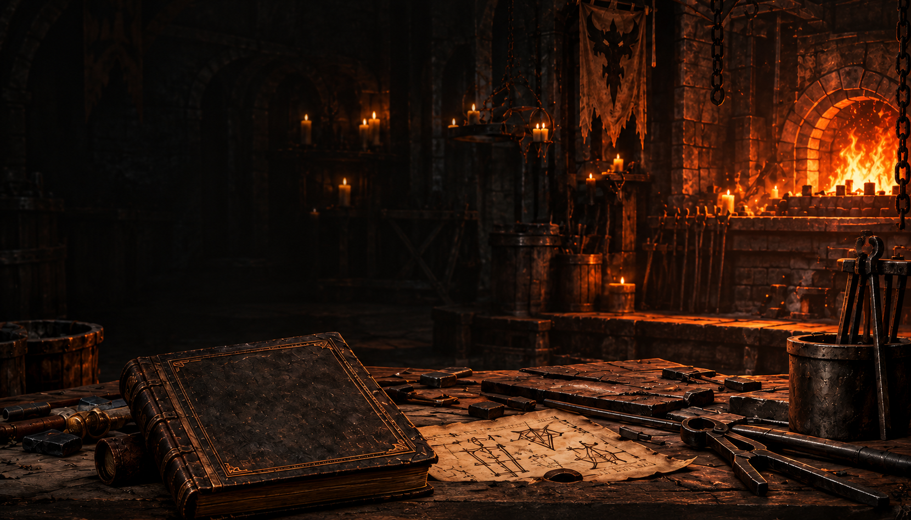

Costruisci il pezzo giusto.
Poi insegui il roll perfetto.
Scegli la base, controlla gli affissi e pianifica il crafting senza buttare materiali.
Che cosa vuoi fare?
Piano di craftingImposta il tuo obiettivo e pianifica i passaggi.Fondamenti e limitiBasi, quattro affissi e operazioni consentite.Ricette e prismiScegli la ricetta e la famiglia adatte alla riga da cambiare.Strategie di craftingProtezione dell’incantato e percorsi per costruire il pezzo.Unici e MiticiAffissi garantiti, incantamento e conversione a Mitico.Tempra e finituraValori, rifinitura e Trasfigurazione alla fine del percorso.Charm e sigilliConversioni, rilanci e riciclo dei talismani.Farming e probabilitàMateriali, budget e significato delle stime.Checklist praticaL’ordine delle lavorazioni e i controlli sulle ricette.Aggiornamenti e problemi notiPatch, changelog del sito e dati ancora incerti.Fonti e attendibilitàRiferimenti consultati e limiti delle informazioni.
Dati dal datamine 3.2.1, con aggiustamenti documentati. Le probabilità sono stime. Changelog · Problemi noti